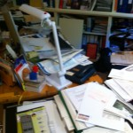
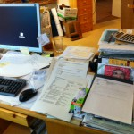

Hilfe! Ideen gesucht!
Die meisten meiner Kundengeschichten sind Erfolgsgeschichten, eigentlich alle, bis auf eine……. Die spielt nicht in eine kleinen Dorf in Frankreich, sondern in einem Büro im Norden Deutschlands. Ich bin von einem Unternehmer engagiert, sein Büro neu zu organisieren.
Um ehrlich zu sein, versuche ich das in diesem Büro seit einem Jahr. Organisieren, Strukturieren und Optimieren heißt, im ersten Schritt, vor allem in diesem Fall, zunächst mal aufräumen und sich von Altlasten zu trennen.
Anblick beim Eintritt des Besuchers:

- Chaotischer Schreibtisch
Aber schon dieses Vorhaben gelingt leider nicht. Jedes Mal sieht es wieder so aus wie beim letzten Mal und der Kunde kann sich einfach nicht von Papier, egal in welcher Form, trennen.
Wie ginge es Ihnen, als Unternehmer selbst, als Mitarbeiter oder gar als Kunde, wenn Sie solch ein Büro betreten würden? Hätten Sie das Gefühl, hier wird ordentlich schnell und zuverlässig gearbeitet? Dies ist der Schreibtisch des gleichen Unternehmers. Auch hier ist schwer vorstellbar, dass er auf irgendetwas geschweige schnell findet. Zwischendurch gelang es schon in einigen Einsätzen den Schreibtisch einmal leer zu bekommen und für fast alles einen endgültigen und logischen Platz zu finden.
Ich hatte leider keinen Fotoapparat dabei für das „Danach“-Foto, dachte aber, das kann ich ja nächstes Mal fotografieren. Dazu kam es aus den schon dargestellten Gründen nicht. Bei näherem Hinsehen sieht der Arbeitsbereich des Büros, der eigentlich der dynamischte Bereich in einem Office sein sollte, also Schreibtisch und Wiedervorlage, so aus:

- Stagnation auf dem Schreibtisch, Hängeregister als Wiedervorlage untauglich
Ich meine damit natürlich nicht aufbewahrungspflichtige Dokumente oder geschäftlich interessante Infos, sondern Prospekte, Broschüren, Visitenkarten, Notizen, steinalte Zeitungen und Zeitschriften…
Zuerst habe ich gedacht, ich mache etwas falsch und habe immer mal wieder eine neue Strategie ausprobiert, Visionen entwickelt, gelockt, gelobt, „Hausaufgaben“ erteilt, vorsichtig gerügt, aber das Ergebnis ist gleich Null. Ich weiß inzwischen, dass es mit meinen Fähigkeiten nichts zu tun hat, aber dennoch bin ich natürlich daran interessiert, den Ursachen für diese Stagnation, beinah Rückzug auf den Grund zu gehen um doch noch einen Erfolg für den Kunden zu erzielen. Denn klar ist, in einem solchen Büro kann keiner mehr gut arbeiten oder gar Kunden empfangen.
Interessant ist dabei, dass der Kunde nach jedem Einsatz zufrieden ist, und ich habe das Gefühl, wir haben gar nichts erreicht. Muss ich meine Erwartungen so zurückschrauben oder mit meinen Aussagen, was ich über das Büro denke, noch deutlicher werden?
Oder habt Ihr noch Ideen, wie man so einen Unternehmer locken, motivieren kann?
Außer „Zündeln“ bin ich zu fast allen Schandtaten bereit, wenn’s hilft:-)!
Weitere Artikel
Jahresende – Aufräumzeit
Mitarbeiter verschiedener Unternehmen waren letztes Jahr begeistert von unserer gemeinsamen Aufräumaktion und wünschen sich eine Wiederholung. Sie waren erstaunt, wie viel Ballast sie in kurzer Zeit abwerfen konnten und gingen …

Ordnung auf dem Rechner – Teil 2
Nach meinen kurzen Tipps zum „Blitzaufräumen“ der Ordner- und Laufwerkstruktur in Teil 1, folgen hier meine Hinweise zum richtigen Umgang mit der Ablagefläche Desktop: 2. Desktop Ich habe dies bewusst oben „Ablagefläche“ genannt …